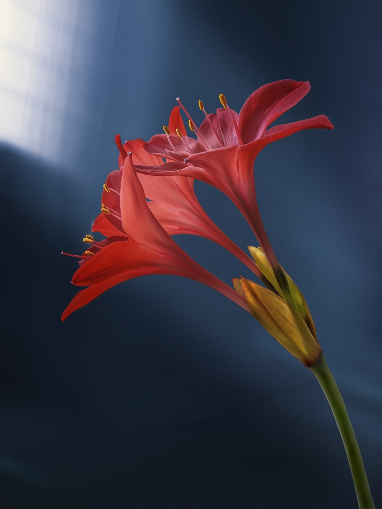
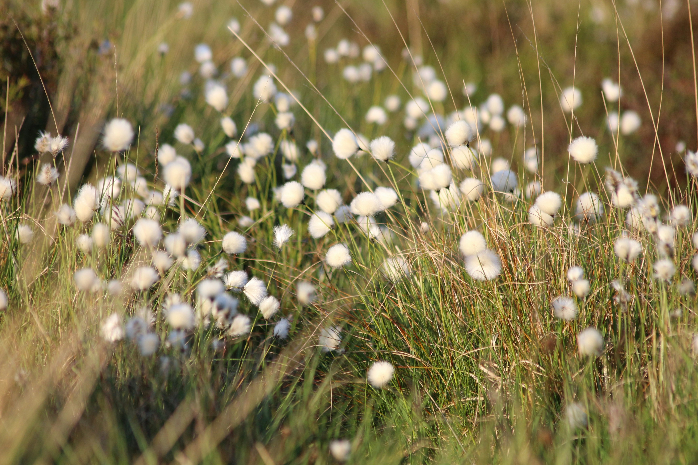
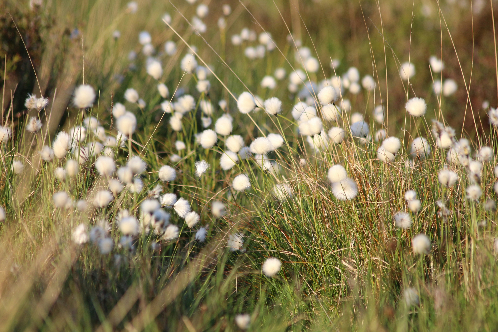

Daisy

Lotus

Lily
Flower Facts
This site was created for CS 409: The Art of Web Programming in accordance with the MP1 requirements (hopefully). To make it more realistic,
I am going to model it as a website that provides information about various flowers and plants.
Here, you will find details about different species, their care instructions, and what they look like.
Whether you are a seasoned horticulturist or just starting your journey into the world of gardening, I hope this site serves as a valuable resource for you.
Explore the beauty and diversity of plants, learn how to nurture them, and discover the joy they can bring into your life.
Daisy
Lotus
Lily
The daisy is a popular flower known for its white petals and yellow center. It symbolizes innocence and purity.
The lotus is a symbol of purity and enlightenment in many cultures. It blooms beautifully despite growing in muddy waters.
Although most flowers and plants make their own food using photosynthesis, which is the process of turning sunlight and water into sugar, some plants are carnivorous, meaning they trap and eat animals. The most popular example of a carnivorous plant is the Venus Flytrap.
Interestingly, there are several other types of carnivorous plants, such as the Pitcher Plant, which lures insects into its deep, fluid-filled leaves, and the sundew, known for its sticky, glandular hairs that capture prey.
Additionally, flowers have fascinating adaptations to attract pollinators, including vibrant colors, sweet fragrances, and unique shapes.
Some flowers can even change color depending on the pH of the soil! For example, hydrangeas can bloom in shades of blue, pink, or purple based on the acidity of the soil they grow in.
These incredible features not only showcase the diversity of the plant kingdom but also play a crucial role in the ecosystem by supporting pollinators and contributing to the balance of nature.
Join us in exploring these amazing plants and their unique characteristics!
 


This is a Snowdrop flower, also known as Galanthus. It is native to Europe and the Middle East. They usually bloom in the spring and have three outer petals and three inner petals. Snowdrops are one of the first flowers to bloom, often emerging from the snow, symbolizing hope and renewal. These delicate flowers are known for their nodding heads and can be found in woodlands and gardens, providing a beautiful contrast against the lingering winter landscape. They are also considered a sign that spring is on its way, often bringing joy after the long winter months.
The video above shows a butterfly as a pollinator; however, many different animals are pollinators, such as bees, birds, and even bats. Pollinators are essential for the growth of many plants, as they help transfer pollen from one flower to another, leading to fertilization and the production of fruits and seeds. Without them, much of the food we eat and the beautiful flowers we enjoy wouldn't exist. Protecting pollinators by creating pollinator-friendly gardens and avoiding harmful pesticides is crucial for maintaining biodiversity and a healthy ecosystem.
Social Media Links
Instagram
Facebook
Mail